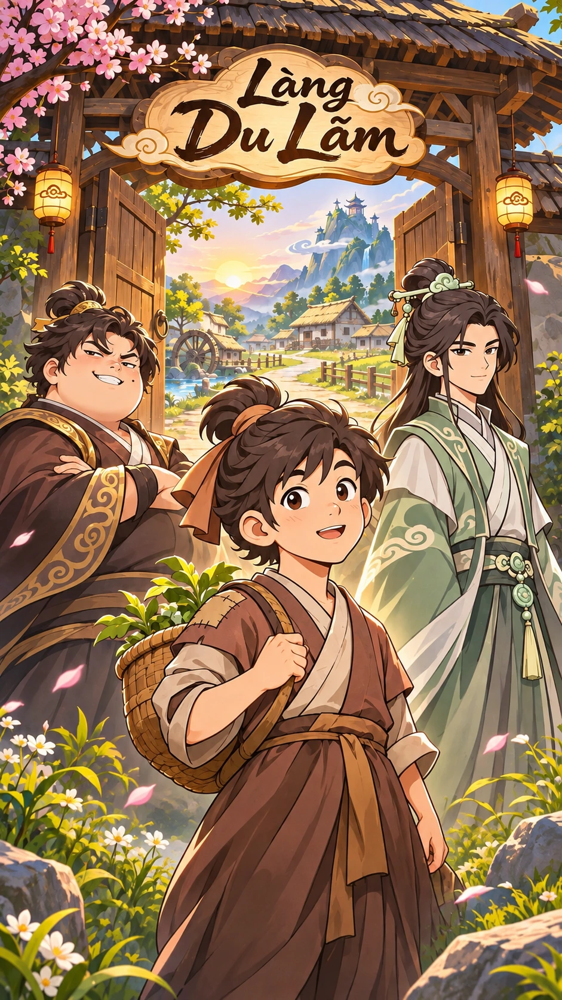

杜
CHỐN KHỞI HÀNH
Làng Du Lãm
Tiểu Phàm · 14 tuổi · Người Làng Du Lãm
➜
Xóm đông
⌘
Bản đồ
⌂
⛶
W A S D / phím mũi tên để di chuyển
·
Shift để chạy
DI CHUYỂN
✊
ĐẤM
⇧
CHẠY
📜
08:00
✦ THỜI GIAN TU TIÊN ✦
Thiên Nam năm 3619 - tháng 12 - ngày 1 - 08:00
Chạm để đóng ✕
🎵
Nhạc: Bật
Tiểu Phàm, 14 tuổi — một ngày mới ở quê nhà.
Ngày 1 · 08:00
+2 giờ
+1 ngày
Dân làng
♪ Âm thanh: Tắt
Nắng · Tự nhiên
Thời tiết tự nhiên
Nắng
Mưa
Bão
Tuyết
Trò chuyện
×

Đang mở cổng làng…
✦
BẮT ĐẦU
✦
Chạm Bắt Đầu để bước vào thế giới tu tiên
Trưởng làng
Bậc Trưởng Bối
Tiên Duyên Khởi Đầu
Chạm để tiếp tục ▾
Nhiệm vụ đã nhận: Tiên Duyên Khởi Đầu
Mục tiêu: Chờ ba ngày, đến quảng trường làng tham gia tuyển chọn linh căn.
靈
KẾT QUẢ KHẢO NGHIỆM
A Huy
Hỏa · Thổ · Thủy
Tam Linh Căn
Phẩm chất: Trung đẳng